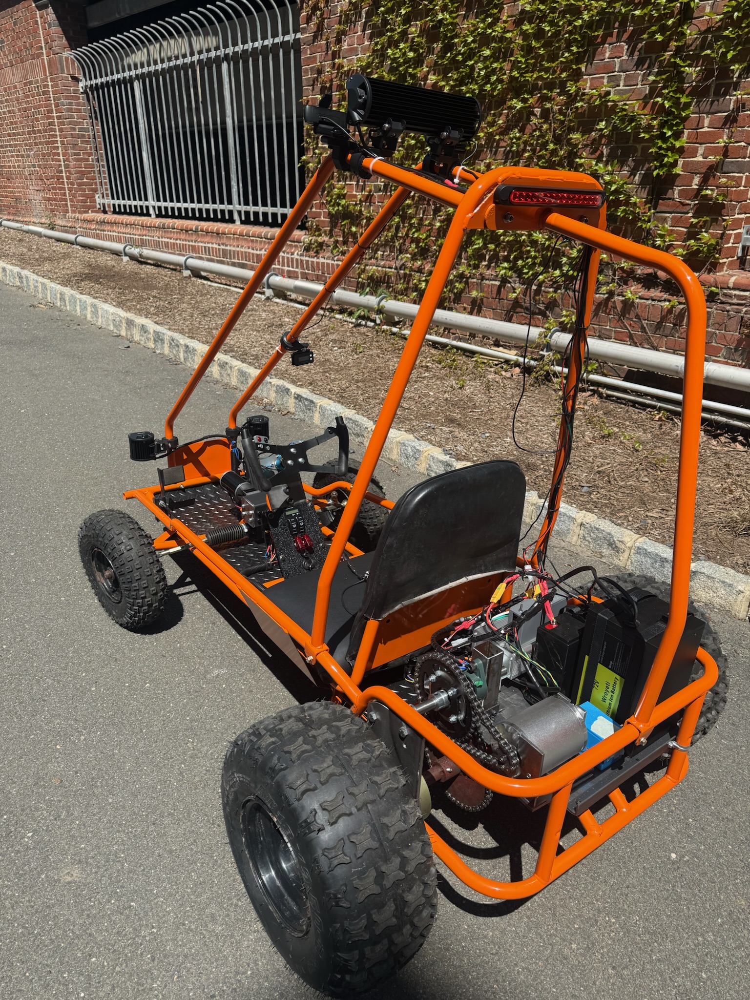
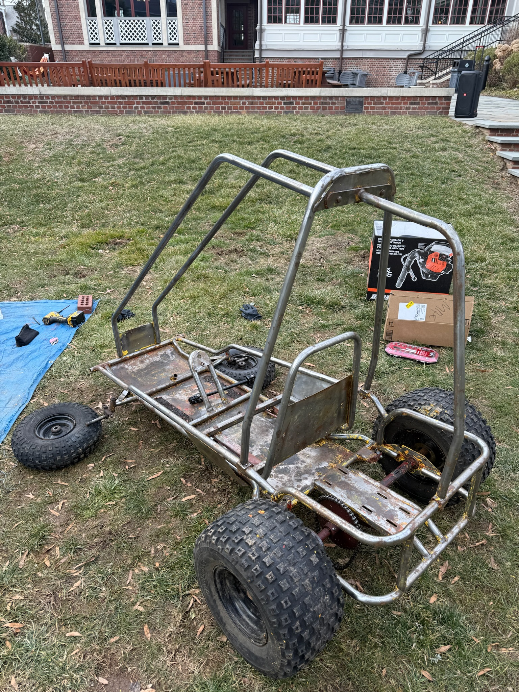
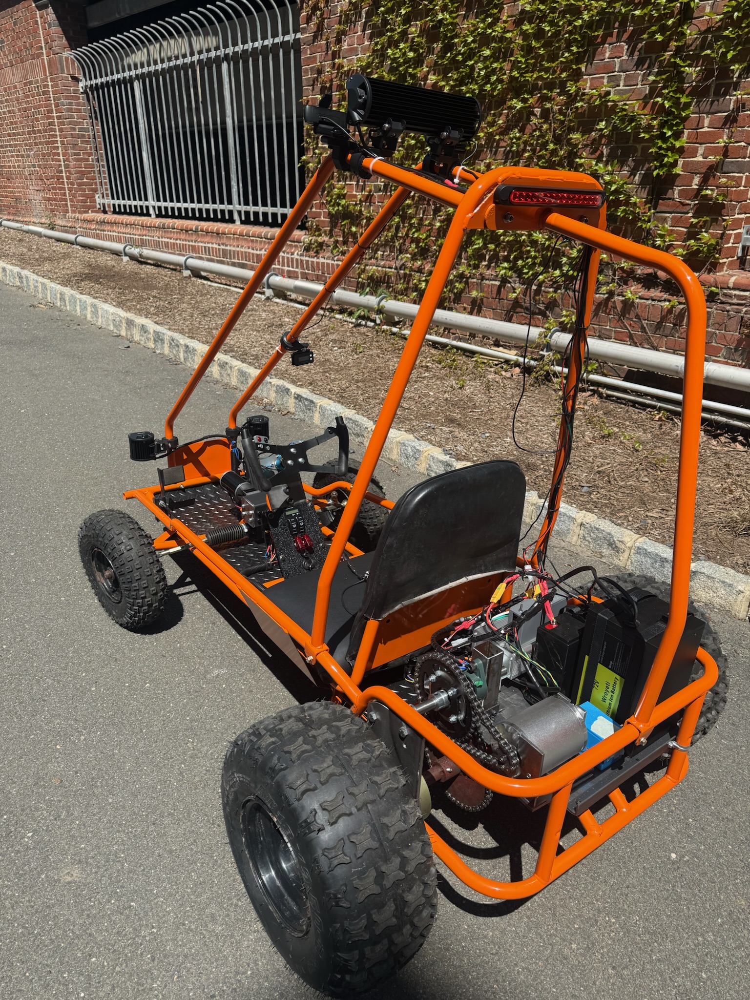
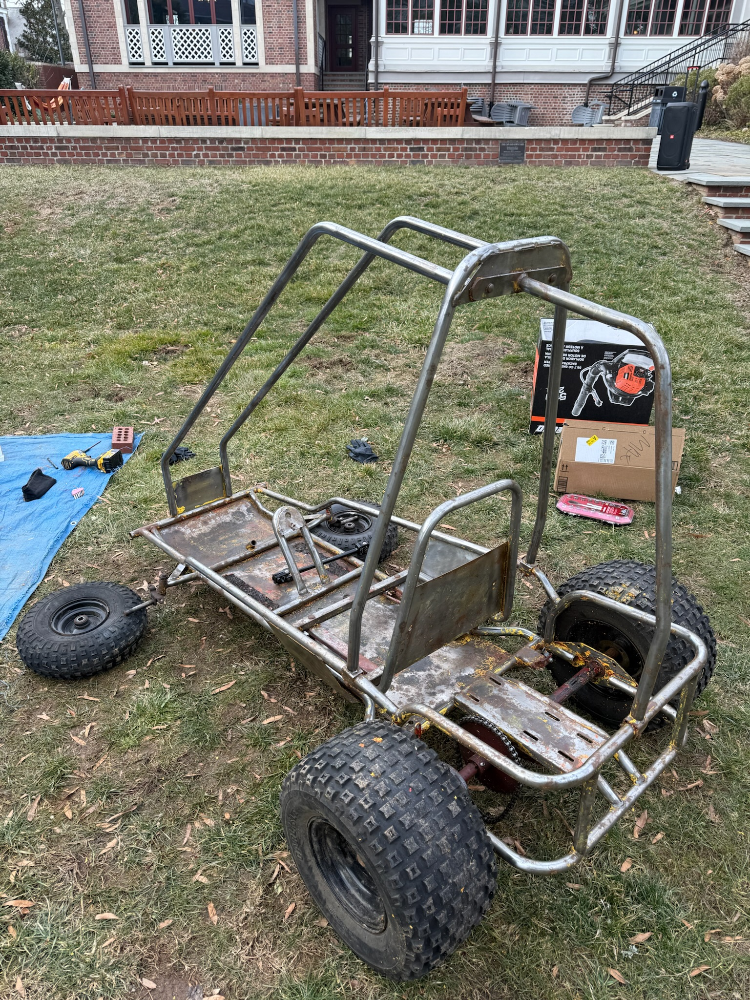

Senior Thesis Project
A collaborative project completed as a culimination of my undergraduate Princeton degree alongside Jackson Crocker and Zev Schuman
 



Abstract
This thesis presents the design and implementation of a fully autonomous, electric go-kart, developed from a refurbished Yerf-Dog frame. The primary objective was to demonstrate vision-based autonomous navigation using low-cost hardware and open-source software. Major subsystems include a 72V electric drivetrain, a custom gear-reduction assembly, a steer- by-wire mechanism actuated via a high-torque motor, and a perception pipeline driven by real-time computer vision. A laptop running Python processes front-facing camera input using YOLOv8 for object detection and SegFormer for semantic segmentation. These outputs are encoded and transmitted to a Teensy 4.1 microcontroller, which actuates steering and throttle commands. The final system reliably performed lane following and object recognition (specifically for pedestrians and stop signs), validated through over 20 hours of autonomous testing on campus roads. Peak velocity reached 14 mph with excess torque available. The system operates for approximately 5 hours on a single charge and was built under a $2100 budget, with a total expenditure of $2040.17. Limitations in model inference speed and decision granularity were encountered, suggesting opportunities for optimization in both perception latency and control smoothing. This work serves as a proof of con- cept for low-cost, modular autonomous vehicles and highlights the practical integration of mechanical, electrical, and software subsystems under real-world constraints. Future development may focus on improving perception capabilities and reducing latencies of all types for higher-speed operation.Object and Road Detection Software Overview
The software to run the buggy has two main modes of operation: Autonomous and Manual. A manual switch was installed on the go-kart switch panel to toggle between these two modes. View the code respository below!
The autonomous mode uses a laptop running Python to process the camera input. The two machine learning models used are YOLOv8 for object detection and SegFormer for determining road drivability. A script was written to implement these models so that, together, they would take an image of the road, and place bounding boxes around certain objects (Pedestrians, Cars, Stop Signs, Etc...). Functions were then written to use the placement and size of these bounding boxes to create steering angle commands for the steering motor.
The manual mode is purely a python script which takes the steering angle from an encoder on the steering wheel, and process it into an input for the steering motor. A PID controller library and a Servo library are used to for the steering motor with a variety of tunable parameters such as max steering angles, max speed, and max acceleration.
Key Go-Kart Specifications:
Estimated Weigh: ~200 lbs
Top Speed With Modified Drive Sprocket: 20 mph
Top Speed With Original Drive Sprocket: 14 mph
Final Gear Down Reduction: 8.4:1
Estimated Range: 5 hours drive time
Drivetrain Battery Size: 72 volt, 20 Ah
Steering Motor: 12 volt, 1.4 Nm with 50:1 reduction (75 Nm total torque)
Total Cost: $2040 usd
Photo Gallery:
Below is a gallery of the resotration, design, building, and testing process! Each photo tells a unique story of a different challenge the team overcame.
Photo 1: Go-kart before any restoration took place. Originally used an internal combustion engine, and every componant was in poor condition. The team soley utilized the frame and stripped all other componants.
Photo 2: This is the stripped frame down to the metal. Paint stripping chemical and a variety of sand paper was used.
Photo 3: This is the frame prepped for paint. Tires and other componants were masked off to prevent over-spray.
Photo 4: This is the frame after paint with new tires.
Photo 5: This features the drive-by-wire steering mechanism. Using a brushed DC motor and a PID controller, the team is able to use a pair of encoders to control the steering angle from a steering wheel. This design went through many iterations, and was eventually geared down to a 50:1 ratio outputting a maximum steering torque of 70 Nm.
Photo 6: This photo features the drivetrain assembly. The team built an additional shaft to gear down the drive motor. The photo shows a 24:1 reduction, but after initial testing, the team changed the drive sprocket to have a 8.4:1 drive ratio. This gets a top speed of 20 mph while maintaining sufficient torque.
Photo 7: This is the final wiring harness in the go-kart. The team used wire conduit and many zip ties to hold everything together, then tucked the excess wires under the seat.
Photo 8: This is the switch panel. Two manual and auto switches are used to change between manual and autonomous control. A battery meter regulates the 12 volt battery, and a potentiometer is used to change the headlight brightness.